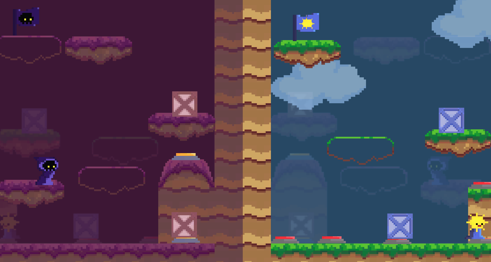
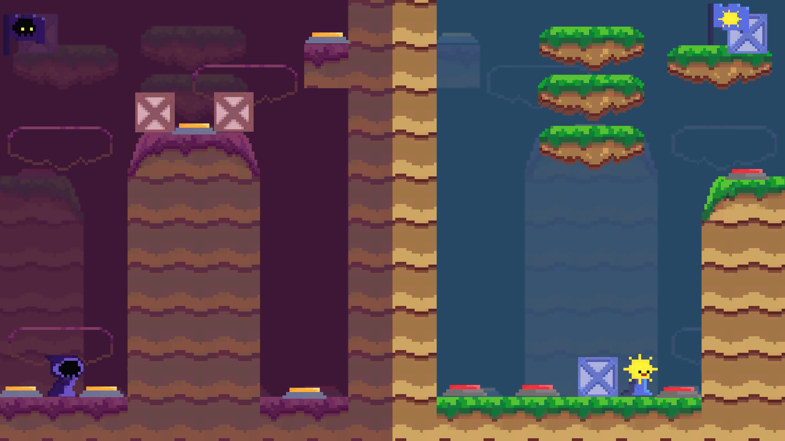
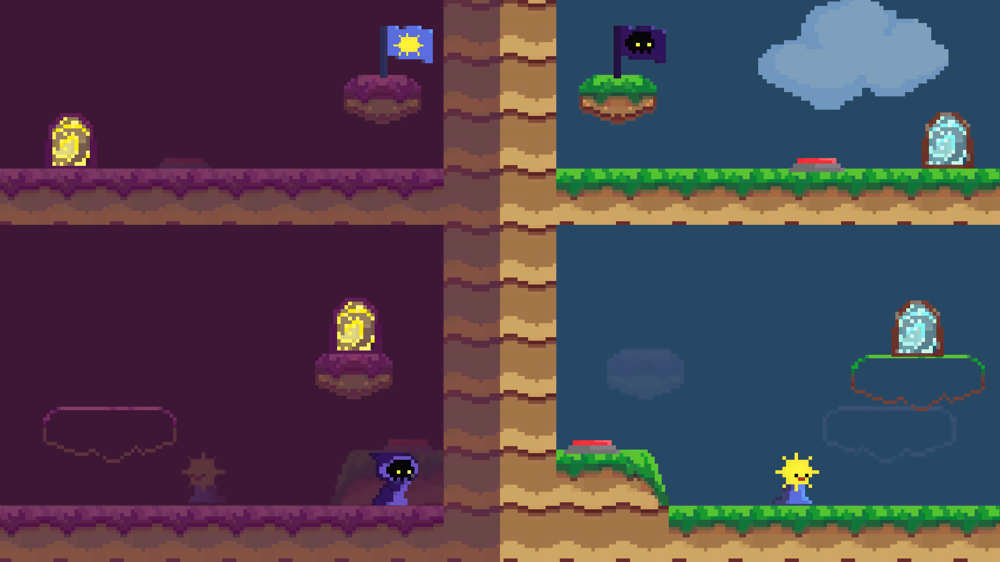

Split
Split is a two player game that requires you to work with a friend to complete puzzles and gather collectibles.
Split was the last game I made before the pandemic began in the Spring of 2020 during a game jam. My group knew that we wanted to create a two player puzzle game where both players affect their partner's world. We made several levels, and every three levels brought in a new mechanic that the player's needed to work with in order to progress onwards.
Engine: Unity
Software Used: Visual Studio
Languages: C#
Timeframe: 48 hours
Status: Complete
Download here!
Split was the last game I made before the pandemic began in the Spring of 2020 during a game jam. My group knew that we wanted to create a two player puzzle game where both players affect their partner's world. We made several levels, and every three levels brought in a new mechanic that the player's needed to work with in order to progress onwards.
This game was submitted to the MAGD Expo in 2020, where it won Best in Show!
Engine: Unity
Software Used: Visual Studio
Languages: C#
Timeframe: 48 hours
Status: Complete
Download here!
My Contributions
My group was rather large, so my contributions were mostly found in level design as we needed several different levels. However, I did contribute towards a few
mechanics.

In certain levels, the players will find some platforms that move in a linear fashion. This allows for the players to reach areas that they wouldn't otherwise be able to. These platforms may go left to right, up to down, or diagonally; whichever direction the level designer wishes for them to be.

Moving Platforms
In certain levels, the players will find some platforms that move in a linear fashion. This allows for the players to reach areas that they wouldn't otherwise be able to. These platforms may go left to right, up to down, or diagonally; whichever direction the level designer wishes for them to be.
Buttons
This is a large mechanic inside of Split. With these, the players are able to turn on certain platforms for each other. All they must do is stand on the button. As seen below, one player is holding down a button for the other player to go on top of a platform.
Various Pictures

